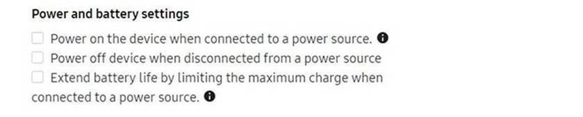

Knox Configure 21.11 release notes
Last updated July 26th, 2023
Starting with this release, Knox product versioning will be named based on dates, specifically the year followed by the month. For example, this November 17, 2021 release — what would have been Knox cloud service 1.41 — uses 21.11 as the version name.
End of support for Internet Explorer 11
Microsoft announced that they will end support for Internet Explorer 11 (IE11) on June 15, 2022. In preparation for this, as of 21.11 (November 18, 2021), solutions on the Knox cloud service are no longer supported on Internet Explorer. The Knox cloud service is best accessed on Microsoft Edge, Google Chrome, or Mozilla Firefox.
Improvements to Knox Configure Routines
With the previous release, KC introduced the use of Knox Configure Routines with Routine Applets. This involves codeless automation for use cases that allow the programming of a response to events based on various factors. The automated response actions are triggered by context clues such as time, battery level, or charging status.
|
Trigger (If) |
Action (Then) |
||
|---|---|---|---|
|
Condition |
Value |
Condition |
Value |
|
Time period |
Start time/End time |
Bluetooth |
On/Off |
|
Specific time |
HH/MM/AM or PM |
Mobile hotspot |
On/Off |
|
Charging status |
Charging/ Not charging |
NFC (Only NFC Standard mode supported) |
On/Off |
|
Battery level |
Level(<=15%) +Ability to set from 1 to 15% |
Wi-Fi |
On/Off |
|
- |
- |
Sounds and vibration |
Sound/Vibrate/Mute |
|
- |
- |
Location |
On/Off |
|
- |
- |
Power saving mode |
On/Off |
|
- |
- |
Open an app, plus option to prevent exiting from the app |
Package name |
| - | - | Power | Off |
With 21.11, Knox Configure Routines see multiple improvements and feature additions. These include:
-
Adding additional options for battery-based routines. For example, IT admins can turn off devices if the battery level is under a certain percentage.
-
Adding the conditional ability to use battery levels below 15%. With this ability, you can select integers below 15 for battery level conditions. While 20% is still the minimum percentage the battery needs to be charged to reverse a routine, the trigger for the routine can be selected per battery level (1-15%).
-
Displaying an error if you set up two routines with the same condition.
-
Changing the time period UI, where the previous condition would be shown as start time: PM, and end time: AM. Now, for better clarity, time periods that go beyond the next day will be shown as ending at AM the next day.
-
Adding NFC support in standard mode only for the time being (card mode not supported).
-
Adding an option to prevent the device user from exiting an app if the Open an app action is used. While the user can still launch another app, like in the case of having the Gallery app open but being able to launch the Camera app, pressing the back or home button will return them to the previous app. For previously configured routines, the default value will be unchecked. Note that if the condition is only Specific time, the option will be greyed out:
For more details and instructions on how Knox Configure Routines work, see KC Routines.
Optimize self-uninstall KC agent feature
In the 1.40, KC introduced the ability to have devices self-uninstall the KC agent after the profile is configured. The aim is to help IT admins who are not interested in giving a full set of permissions for minimal use cases, such as rebranding. In this release, additional items were added to this feature:
- Creating self-uninstall profiles with Samsung Kids mode.
- Supporting Boot up and Shutdown animations.
After choosing the self-uninstallation option and device configuration, policies are maintained. See the following list for examples:
- Turn off screen auto-rotation
- Set a custom booting animation
- Set a custom shutdown animation
- Brightness
- Set auto brightness
- Hide elements on Lock screen
- Launch automatically after configuration
For more information, refer to the instructions outlined in the KC 1.40 release notes.
Enhance Multi-App Kiosk Mode
You can now set multiple applications in KC Pro-Kiosk Mode with the ability to enter and re-enter apps quickly by typing a passcode in the device. You’re able to select and add content such as PDFs, images, and videos in Multi-App Kiosk mode. There’s the ability to add a content folder to store content in Multi-App Kiosk mode.
To add content, select an item in the grid, then choose a content type from the drop-down. Examples of content include a bookmark, app, or a folder. After choosing your content, enter a name with a 20-character limit, and then upload it. If no name is entered, then KC uses the original file name.
Support power and battery settings for XCover devices
With KC 21.11, you can now configure the power and battery settings of Galaxy XCover Pro and XCover 5 devices on Android 11. The settings now work as intended with the series, and there are no battery drainage issues. There are also updates to existing tooltips to reflect the maximum charge limit feature currently applied to these devices. Note that this feature does not currently work for XCover FieldPro devices.

In summary, KC now supports power and battery settings for:
- Devices running a Knox version higher than 3.4
- Tablet devices (both normal and rugged)
- Mobile devices (XCover Pro, XCover 5 for Android 11 only)
Any other devices not supported will trigger a warning that KC is unable to turn on the battery protection feature. It will prompt you to double check the device and the profile.
Add option to skip T&C for Setup/Dynamic edition
During device enrollment, you can now choose to skip the Terms & Conditions (T&C) if desired. For both Dynamic and Setup editions, this can be done by checking Hide Knox Configure T&C. If you choose to skip it, then there will be no KC T&C in EULA and in Settings. If there are no additional agreements, the entire agreements screen is skipped. If required, additional T&Cs can be added by creating profiles.
Add option to disable settings suggestion pop-up
After KC applies policies to the target device via Settings app customization, such as Bixby side key remapping, a settings suggestion pop-up will appear. This pop-up cannot be removed by selecting Exit. Every time a device user modifies the settings, the pop-up will appear again. The disable option is provided on Knox 3.8 and higher. In the KC console under Device Settings, an option to disable suggestion pop-ups will be provided.
Change default Knox version to Knox 3.4 and higher
During profile creation, the default Knox version is changed from Knox 2.9-3.3 to Knox 3.4 and higher.
Back to release notesIs this page helpful?